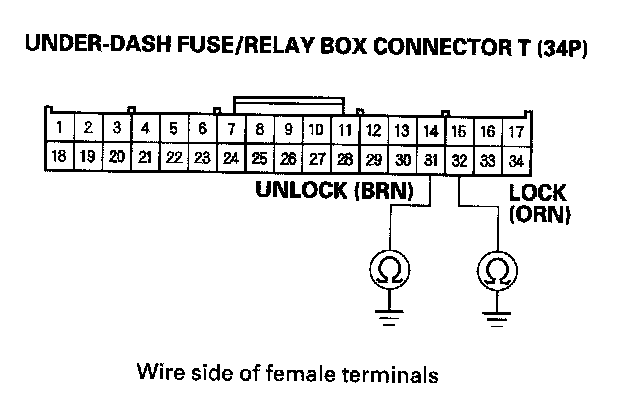
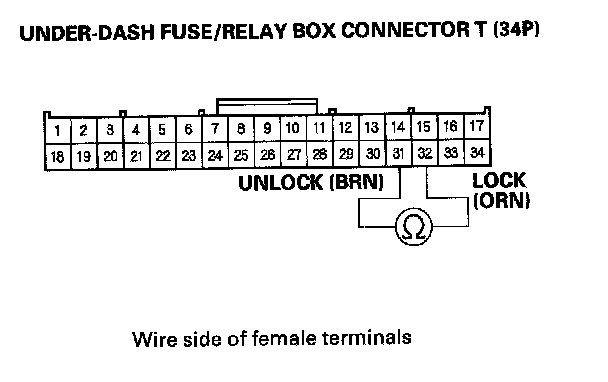

B1127
DTC B1127: Driver's Door Key Cylinder Switch Signal ErrorNOTE: If you are troubleshooting multiple DTCs, be sure to follow the instructions in B-CAN System Diagnosis Test Mode A.
1. Clear the DTCs with the HDS.
2. Turn the ignition switch OFF, and then back ON (II).
3. Insert the ignition key into the driver's door key cylinder switch, and turn the key in LOCK and UNLOCK positions ten times.
4. Check for DTCs with the HDS.
Is DTC B1127 indicated?
YES - Go to step 5.
NO - Intermittent failure. The driver's door key cylinder switch system is OK at this time.
5. With the driver's door key cylinder in the neutral position, select KEYLESS with the HDS, and enter the DATA LIST.
6. Check the ON/OFF information of the DRIVER'S DOOR KEY CYLINDER SWITCH (LOCK) and DRIVER'S DOOR KEY CYLINDER SWITCH (UNLOCK) in the DATA LIST.
Are both information indicators OFF?
YES - Go to step 12.
NO - Go to step 7.
7. Disconnect the driver's door lock actuator 10P connector.
8. Check the ON/OFF information of the DRIVER'S DOOR KEY CYLINDER SWITCH (LOCK) and DRIVER'S DOOR KEY CYLINDER SWITCH (UNLOCK) in the DATA LIST.
Are both information indicators OFF?
YES - Faulty driver's door key cylinder switch; replace the driver's door lock actuator.
NO - Go to step 9.
9. Turn the ignition switch OFF.
10. Disconnect the under-dash fuse/relay box connector T (34P).

11. Check for continuity between the No. 31 (UNLOCK) and No. 32 (LOCK) terminals of the under-dash fuse/relay box connector T (34P) and body ground.
Is there continuity?
YES - Faulty MICU, replace the under-dash fuse/relay box.
NO - Go to step 12.
12. Turn the ignition switch OFF.
13. Disconnect the driver's door lock actuator 10P connector.
14. Disconnect under-dash fuse/relay box connector T (34P).

15. Check for continuity between the No. 31 (UNLOCK) and No. 32 (LOCK) terminals of the under-dash fuse/relay box connector T (34P).
Is there continuity?
YES - Repair a short in the wire between the LOCK and UNLOCK wires.
NO - Substitute a known-good MICU, and recheck. If the symptom/indication goes away, replace the original MICU, if not, replace the driver's door lock actuator.